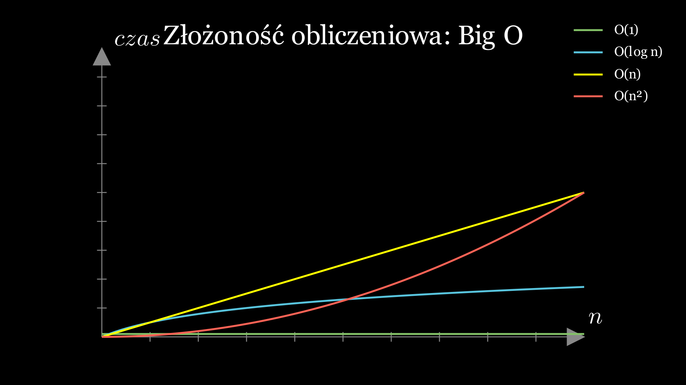

ANIMOWANE PISANIE KODU
(JAVA)
Kliknij → aby przejść do przykładu.
Przykład — pisanie jak „na żywo”
Sortowanie bąbelkowe - krok po kroku
🎬 Manim: Sortowanie krok po kroku
Wizualizacja: Manim Animation (Auto)
Animacja Manim: pełna automatyczna animacja
📊 Python Tutor: Tablica w pamięci
Klikaj "Next >" aby zobaczyć krok po kroku jak tablica zmienia się w pamięci!
📈 Złożoność algorytmów - Big O
O(1) < O(log n) < O(n) < O(n log n) < O(n²)
🎯 VisuAlgo: Porównanie algorytmów sortowania
Wybierz algorytm (Bubble Sort, Quick Sort, Merge Sort), kliknij "Sort" i używaj "Go" lub "Next" do kroków!
📦 Python Tutor: Obiekty i referencje
KLUCZOWE! s1 i s3 wskazują na TEN SAM obiekt - modyfikacja przez s3 zmienia s1!
🔄 Python Tutor: Rekurencja Fibonacci
Obserwuj stos wywołań! Klikaj "Next >" - zobacz jak funkcje nakładają się i zwracają wartości!
🗺️ Algorytm Dijkstry - Najkrótsza ścieżka
Kliknij "Dijkstra's", wybierz wierzchołek 0, kliknij "Go" - obserwuj jak algorytm znajduje najkrótsze ścieżki!
🌳 Drzewo binarne wyszukiwań (BST)
Kliknij "Create" aby wygenerować losowe drzewo, potem "Insert/Remove/Search" - obserwuj reorganizację!
🕸️ Przeszukiwanie grafu: BFS vs DFS
Wybierz "BFS" lub "DFS", kliknij wierzchołek startowy i "Go" - zobacz różnicę w kolejności odwiedzania!
🔗 Lista powiązana (Linked List)
Kliknij "Insert head/tail", "Remove" - obserwuj jak wskaźniki next/prev się zmieniają krok po kroku!
⛰️ Heap (Kopiec) - Priority Queue
Kliknij "Insert" aby dodać element - zobacz automatyczne przesiewanie w górę! "ExtractMax" - przesiewanie w dół!
🌲 Minimalne drzewo rozpinające (MST)
Porównaj "Prim's" vs "Kruskal's" - różne podejścia do znalezienia najtańszego drzewa rozpinającego!